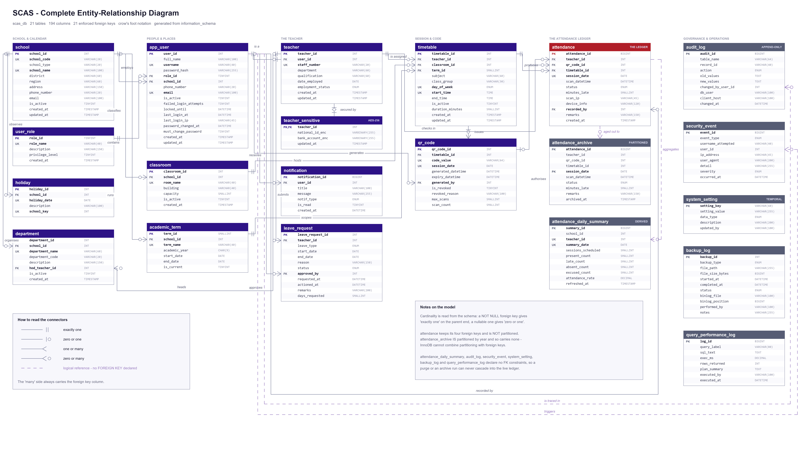
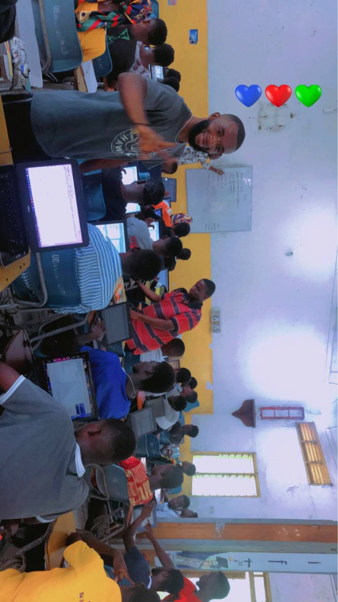
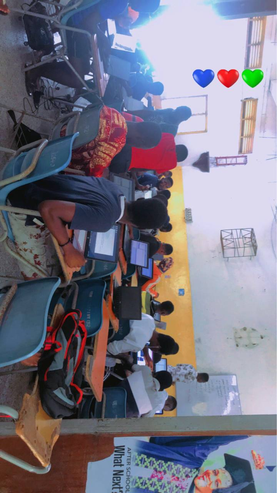

Building useful software. Making technology easier to learn.
I develop web, mobile, and relational database systems for real-world workflows—from institutional school administration and classroom attendance to retail operations and academic analytics. Alongside software delivery, I support computing education as a Teaching Assistant at the University of Education, Winneba.
A mobile-first retail register and inventory platform engineered for fast counter transactions, split payments, multi-store stock management, and zero-flash dark theme hydration before paint. Decoupled React PWA with Laravel/PostgreSQL backend.
School Management · Mobile AppSupabase Postgres RLS
Ascenda: School Management System
A mobile-first school management application built with React Native/Expo and Supabase PostgreSQL. Implements strict Row Level Security (RLS) across Super Admin, School Admin, Headmaster, and Teacher roles with automated continuous assessment (CA) scoring, A–F grading, and student promotion approval workflows.
A responsive client-side academic tracker built for university students. Features credit-weighted GPA calculation, honours classification determination (First Class, Second Upper, etc.), interactive semester target trend charting, CSV data export, and print stylesheet.
Civic Tech · Election GovernanceSynthetic Audit Model
Electo: Election Management Platform
A secure election management and voter ballot platform developed with PHP 8+ and MySQL/MariaDB for student unions and associations. Features single-ballot casting enforcement, candidate management, tamper-evident audit logging, and synthetic mock verification.
PHP 8+MySQL / MariaDBSession SecurityAudit Trail
Interactive Academic Sandbox
Test Alex's GPA & Honours Calculation Engine
Experience the pure JavaScript calculation core (gpa-core.js) extracted from Alex's open-source GPA Calculator. Change grades or credit hours below to see dynamic honours classification in real time.
In Ghanaian universities and secondary schools, paper attendance sheets are routinely passed around lecture halls with 200+ students. This results in rampant proxy attendance ("buddy punching"), missing record sheets, and weeks of delayed manual tallying when exam eligibility lists must be prepared.
Engineering & Database Architecture Decisions
Rather than relying on client apps that can be intercepted or spoofed, SCAS pushes attendance validation into the relational database layer.
• Strict SQL Procedures: Attendance is registered exclusively via stored procedures that enforce active lecture timetable windows, room allocation, and single-scan constraints within atomic transactions.
• Time-Expiring Disposable QR Tokens: QR codes projected on class screens rotate with time-limited cryptographic tokens. Taking a photo and sending it to an absent peer outside the classroom fails verification.
• Partitioned Historical Archive: Live scans hit an active session ledger (`attendance`), while completed term data is archived into partitioned tables (`attendance_archive`) to preserve sub-millisecond query execution.
• Sensitive Column Encryption: Staff personal identifiers and accounts are protected using AES-256 (`teacher_sensitive`).
Verification & Test Suite
Documented with a comprehensive 47-assertion SQL test suite verifying edge cases: holiday schedule overrides, duplicate scan rejection, timetable collision prevention, and security audit log triggers.
21Tables
42Procedures
26Triggers
47Test Assertions

Figure 1: Full SCAS Entity-Relationship Architecture
Documented Limitations & Next Steps
Verified on MariaDB 10.6+ / MySQL 8. Mobile client companion (Expo) requires validated camera permissions and local school server HTTPS configuration. Next milestone: integrating geofencing radius validation for large campus lecture theatres.
Retail Systems · Case Study 02
OmniPOS: High-Performance Retail & Till System
Live Demo · Sign-in RequiredReact PWA FrontendPostgreSQL Backend
Retail Ergonomics & Checkout Latency
Behind a busy retail counter, cashiers cannot wait for multi-second page loads or clunky modal popups. Even a fraction of a second of latency per barcode scan leads to long customer queues and lost sales.
Key Architecture & Implementation Decisions
OmniPOS was designed as a lightweight Progressive Web App (PWA) with immediate visual response:
• Pre-Paint Theme Script: Implemented a tiny zero-dependency script executed directly in `` before the bundle paints. If a till is set to dark mode, it never flashes white upon booting behind the counter.
• Decoupled Architecture: Frontend runs on React + Vite for sub-100ms UI interaction, while business logic and multi-branch stock reconciliation are handled via a REST API with PostgreSQL/Neon database persistence.
• Cart Calculation Engine: Pure in-memory calculation handles taxes, line item discounts, and split payments without requiring round-trip API latency for each item added.
Live Demo & Verification Note
The public demo dashboard is shown with the explicitly labeled Demo Shop selected. Its screenshots use demo inventory and omit personal account details; shared administrative passwords are intentionally omitted from public documentation.
Figure 2: OmniPOS Demo Shop dashboard with inventory and register statusLaunch Live Demo ↗

“Teaching technology forces you to understand it at the deepest possible level. If you cannot explain an architecture simply to students, it is probably over-complicated in code.”
Professional Profile
The Intersection of Software Development & Computing Education
I am a software developer and ICT educator based in Winneba, Ghana. My work spans the full software development lifecycle—from conceptualizing relational database schemas and building mobile applications to deploying cloud utilities.
Having earned a First Class Honours BSc. in Information and Communication Technology Education from the University of Education, Winneba (UEW), I currently serve as a Teaching Assistant in the Department of ICT Education while pursuing my Master of Philosophy (MPhil) in ICT Education.
This dual focus defines my engineering philosophy. When building institutional systems like SCAS or Ascenda, I understand educational pain points firsthand. When teaching university students programming in C++, Java, PHP, and Web Technologies, I translate production-grade software principles into accessible, step-by-step learning.
Clean Architecture
Prioritizing strict database integrity, modular decoupling, and verifiable security boundaries.
Pedagogical Clarity
Equipping students with algorithmic intuition, debugging methodology, and sound development habits.
Career & Academic Journey
Experience & Education
A chronological timeline of verified professional responsibilities, academic achievements, and institutional service.
Teaching Assistant
2025 – Present
Department of ICT Education · University of Education, Winneba (UEW)
Facilitating computing laboratory instruction and practical programming tutorials in C++, Java, PHP, SQL, and Web Development for undergraduate student cohorts. Assisting faculty with course administration, project reviews, and student technical mentorship.
School of Graduate Studies · University of Education, Winneba
Conducting postgraduate research into educational software systems, digital participation, computing pedagogy, and assistive technological frameworks for learning.
Educational TechnologyCurriculum ResearchDigital Systems
Founder & Lead Software Developer
2022 – Present
GAF Tech
Architecting practical software applications including educational portals (Ascenda), attendance platforms (SCAS), point-of-sale platforms (OmniPOS), and academic utilities (GPA Calculator). Directing UI/UX design, database modeling, and client delivery.
BSc. in Information & Communication Technology Education
2021 – 2025
University of Education, Winneba (UEW)
Graduated with First Class Honours. Completed extensive coursework across Data Structures, Algorithms, Software Engineering, Database Systems, Computer Networks, and Instructional System Design. Consistently organized peer tutorials for programming courses.
First Class HonoursSoftware EngineeringDatabase ManagementComputing Pedagogy
Teaching Internship & Attachment
2022 – 2024
Ghana Education Service (Banda R/C JHS · Dambai College of Education)
Instructed junior high school and college students in Computing, digital literacy, and basic algorithmic problem solving, designing practical lesson plans and assessments.
Beyond writing software, I am deeply committed to equipping the next generation of technologists and students with strong computational foundations.
Verified Laboratory Evidence
Active Classroom Instruction: Variable Tracing & Program State
Authentic recording of Alex Frimpong Gyiwah conducting an undergraduate programming tutorial at the University of Education, Winneba (UEW). Explaining variables, state transitions, and memory allocation on the laboratory whiteboard to a full classroom of computing students.
Direct chalkboard execution tracing bridging syntax to runtime memory
Real-time debugging and responsive question-and-answer interaction
Department of ICT Education, Winneba campus

University Instruction
Computing Laboratory Sessions
Hands-on laboratory sessions at UEW focusing on coding fundamentals in C++, Java, and Web Development. Students learn to trace code execution, debug errors systematically, and translate conceptual problems into functioning software.
Community Outreach
BECE Candidates Vacation Classes
Organized and conducted free vacation classes in Computing and Mathematics for Basic Education Certificate Examination (BECE) candidates in Banda, bridging foundational gaps before secondary school admission.
Peer Mentorship
Study Groups & Code Reviews
Formed and led peer study circles throughout undergraduate study, helping course peers master complex concepts such as relational normalization, object-oriented design patterns, and full-stack integration.
Verified Capabilities
Technical Skills & Proficiencies
Technologies actively applied across shipped software projects, database architectures, and academic instruction.
Laboratory DemonstrationCurriculum DeliveryContinuous Assessment DesignAlgorithmic Problem SolvingTechnical Documentation
Recommendations
Verified Testimonials
Feedback from students, institutional colleagues, and collaborators on instruction and project execution.
“Alex is a natural teacher. His ability to explain difficult concepts in a clear and concise manner has helped me immensely in understanding programming and web development. His patience and dedication make him an outstanding mentor.”
Benedicta Forson
Student · University of Education, Winneba
“As a developer, Alex has a keen eye for detail and a strong sense of user-centered design. The applications he develops are responsive, visually clean, and built on reliable database foundations. We have received numerous compliments from users.”
Angela Moro
Director · Creative Solutions
“Alex is not just a programmer; he thinks ahead about system architecture and edge cases. His ability to foresee potential issues and address them proactively has saved significant time and resources. His professionalism is commendable.”
Erasmus K. Tidore
CEO · NanaKing Computers
Get in Touch
Let’s discuss a project or educational collaboration.
Whether you are an institution exploring educational software, a business seeking custom system development, or a fellow educator looking to collaborate, I welcome your message.
Direct Email (Click to Copy)alexfrimpong9@gmail.com